Huizhou · Shuangyue Bay
2026.09.24 – 09.27 ｜ 首晚江北希尔顿套房，后两晚住海边
不去爬山、不逛街，只留海、日出、日落和一条船
应你的要求，拿掉了所有爬山和逛街：罗浮山、惠州西湖、水东街、朝京门、华贸天地这些市区与山景内容全部删除，购物模块压缩成一份可直接采买的手信清单。
行程重组为「首晚市区落地 → 转场双月湾 → 两个完整海边日」：第一晚住江北希尔顿套房，后两晚住双月湾海景酒店，游玩项目全部围绕海面、沙滩和出海展开。
返程按你选定的晚班 CA1958（9/27 22:25 起飞）编排，最后一天因此是完整的一天，不用赶路。落地首都 T3 是次日凌晨 01:30，回天津的方式见「当地贴士」——这一段有硬约束，务必先读。
四天里只有一件事：待在海边。行程按「落地晚、转场半天、玩两天整」的节奏排，每天的强度都可以临时砍掉一两项而不影响主线。时间均为建议值，可按天气和体力前后浮动。
9/24（周四）｜ 大兴 20:55 → 惠州平潭 23:50
9/25（周五）｜ 江北 → 双月湾（约 100 公里）
9/26（周六）｜ 双月湾整天
9/27（周日）｜ 双月湾 → 惠州平潭 22:25 起飞
| 方式 | 时间 | 费用 | 说明 |
|---|---|---|---|
| 网约车直达 | 约 1h40m | ¥320–390 | 落地即走，凌晨也有车，是唯一能当晚到家的方案 |
| 机场住一晚 | 次日上午 | ¥300–500 | T3 附近住下，次日 C2551 06:00 北京南 → 06:30 天津 |
| 机场大巴 | 2h30m | ¥82 | 最便宜，但首班 06:30，只能次日坐 |
京津城际末班约 23:17、首都机场往天津的大巴末班 23:00——落地 01:30 两个都赶不上。如果不想深夜花三百多打车，就在机场附近住一晚。
全部在双月湾及周边海岸线上，彼此车程多在 20 分钟内。六个点分两类：三个看海湾全景和日落，三个下到海边玩水看生物。都免费或低价，不需要提前很久规划。
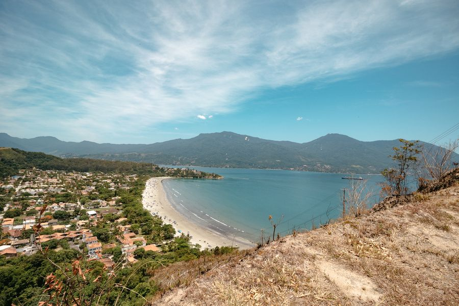
唯一能完整看见「双月形海湾」全貌的地方，双月湾的名字就来自这个角度。
清晨 05:30–08:00 看海上日出，傍晚 17:30–19:00 看落日——这两个时段光线柔和、海湾层次最清楚。避开 11:00–15:00，暴晒且容易过曝。
上山两种方式：徒步登顶约 20–30 分钟，全程上坡但树荫多；或坐山脚摩的，工作日 ¥15/人往返、节假日 ¥25–30。
避坑：摩的师傅会漫天要价，上车前一定讲死往返价；山顶风很大，带件薄外套，别靠护栏边缘。
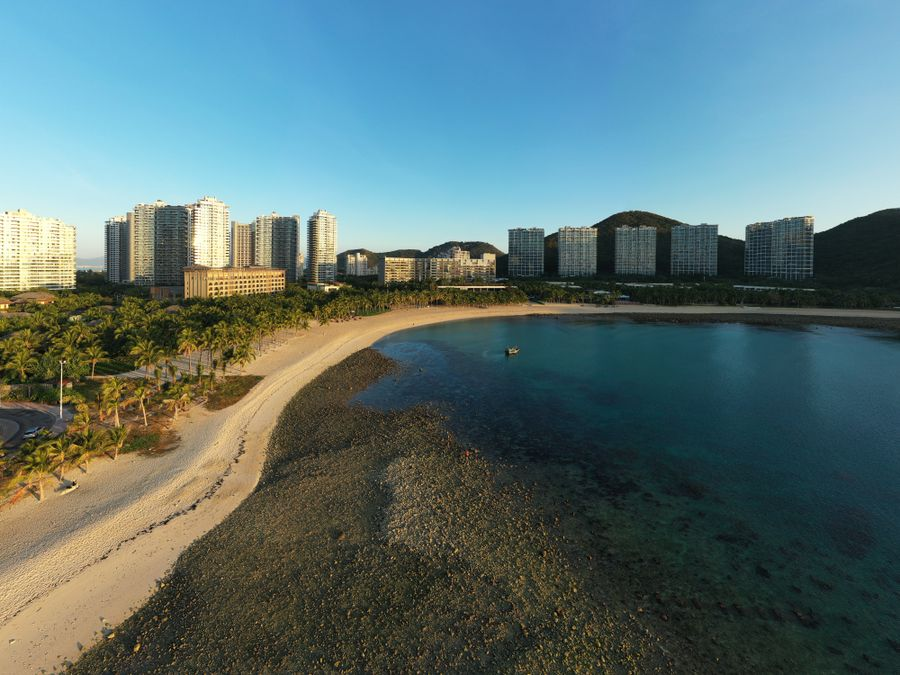
海岸线绵延二十多公里，沙滩平坦舒缓，是这次所有水上项目的起点。
左湾平静、右湾浪大，同一片海湾两种性格——这也是它值得待两天的原因。下水前先看旗子和救生员位置，礁石区穿防滑鞋。
摩托艇、拖伞、香蕉船这些项目的售票点就在沙滩上，见「体验」模块。
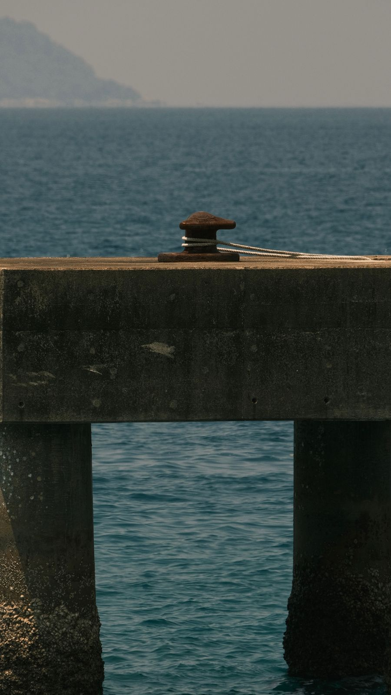
一条延伸进深海的石质长堤，本地人私藏的日落点，商业化程度低。
长堤、大海、落日同框，是这次行程里最省钱的「大场面」。周边没有公共交通，只能自驾或打车到堤口。
安全：涨潮时海水会漫上堤坝，路面湿滑；不要走到堤坝尽头。周边无卫生间、无便利店，去之前先解决好。
建在礁石上的酒吧与栈道群，含观光塔、礁石廊桥、礁石礼堂，日落时段出片。
也有含自助晚餐的联票 ¥228/人。如果住在这一带的酒店，酒吧就在楼下，走过去即可。
需要提前在微信小程序预约，尤其是周末和节假日。
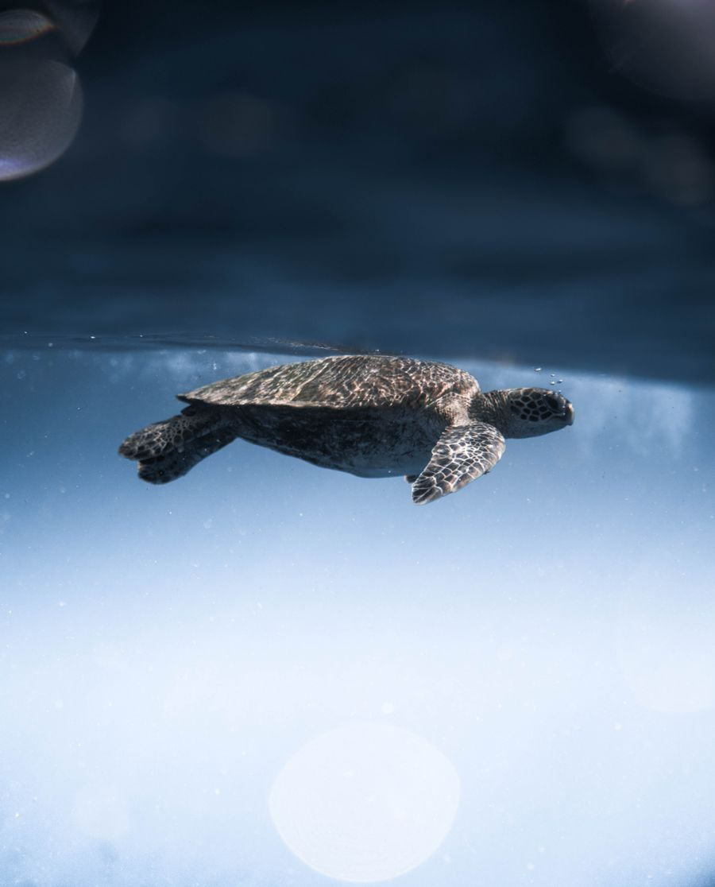
中国大陆唯一的海龟产卵地，海岸原始，人少，适合半天慢走。
离双月湾观景台很近，可以和观景台串成半个下午。保护区以生态保护为主，不要期待海洋馆式的展示，主要是海岸线和科普馆。
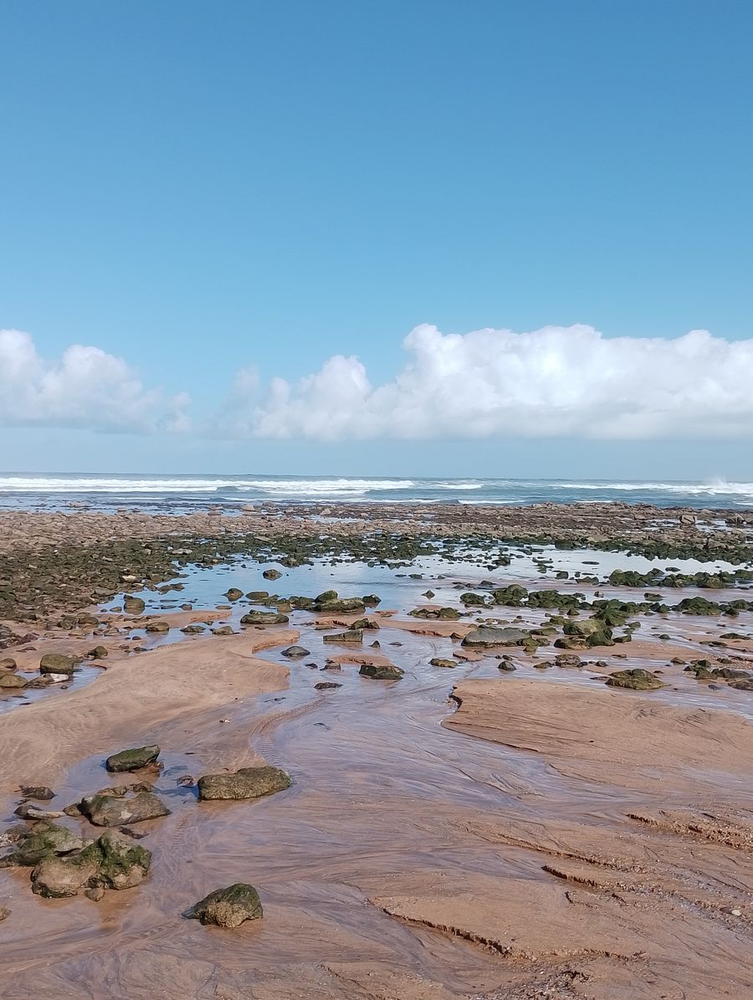
双月湾最原生态的免费沙滩，因远处海岛形似卧狮得名，人少、沙细。
适合赶海、露营、发呆，是避开大众沙滩人流的去处。没有救生员，不要在这里下水游泳。
这处位置在公开资料里没有可靠坐标，建议向酒店前台或当地司机确认具体入口后再前往。
这一版的核心。每项都标了单人友好度——你是独自出行，而双月湾不少项目按双人票或整船计价，一个人去差别很大。价格为携程、去哪儿等平台的公开参考价，随季节和周末浮动，以平台实时显示为准。
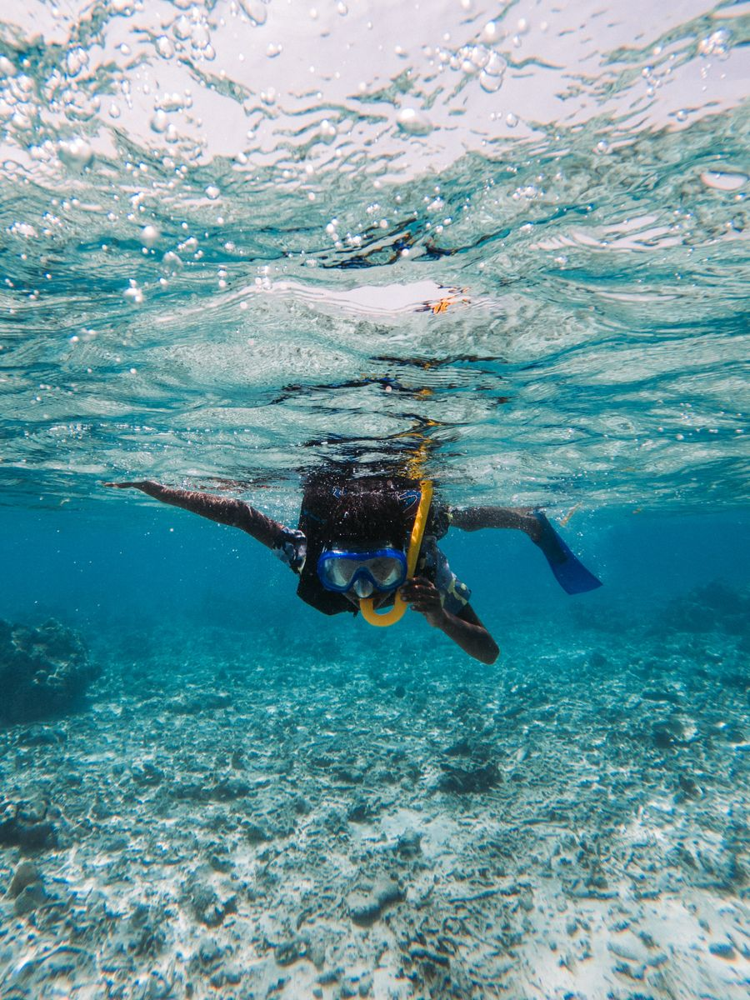
一趟船把三件事打包，是独行性价比最高的选择。
在码头登船，快艇一般限载 7 人，可拼船。简易浮潜装备和救生衣都含在票价里，不用自己带。
一个人去玩海，这一项闭眼选它。
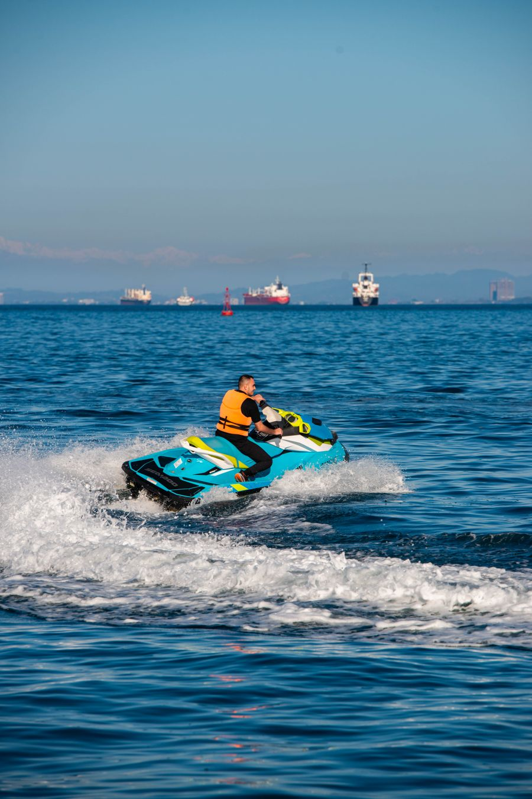
来海边不体验一次算白来，可坐 1–2 人，最刺激也最便宜的入门项。
沙滩上有售票点，随买随用。也有和拖伞的组合票（双人 ¥388–438，单人建议现场问散拼）。
由快艇拖着升空，从空中看整个双月湾，单飞和两人同价，赠送视频和照片。
因为单飞和两人飞一个价，一个人去等于替同伴付了钱——要么在沙滩上找人拼，要么干脆接受这个差价。
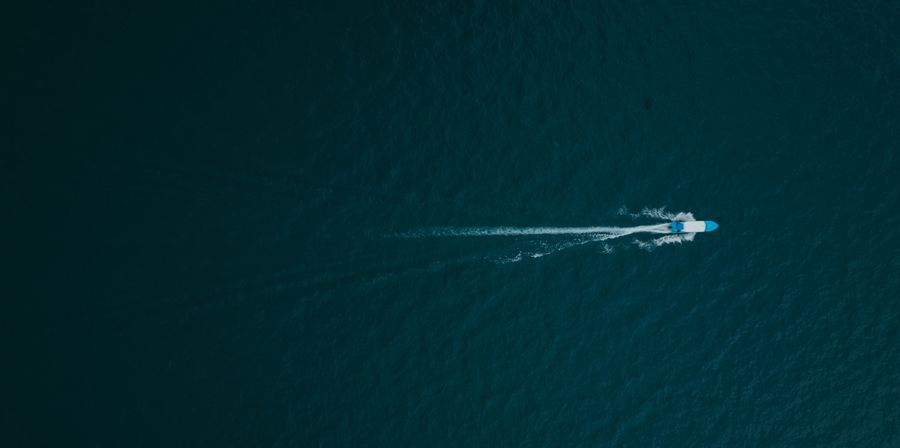
由快艇拖着在海面疾驰，一船可坐 2–6 人，典型团体向项目。
票价基本按双人卖，独行要在售票处问有没有散拼名额，凑不齐人就别勉强。
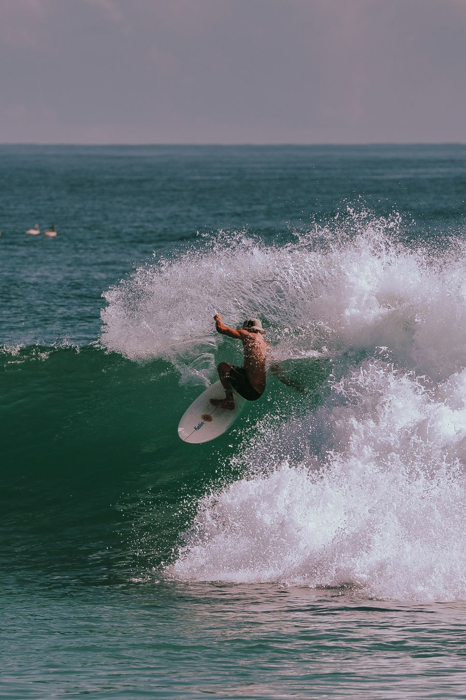
双月湾右湾浪大可以冲浪；尾波滑水是更新的项目，由快艇拉着冲浪。
尾波按小时包船计价，一个人包不划算，最好能凑 3–4 人分摊。
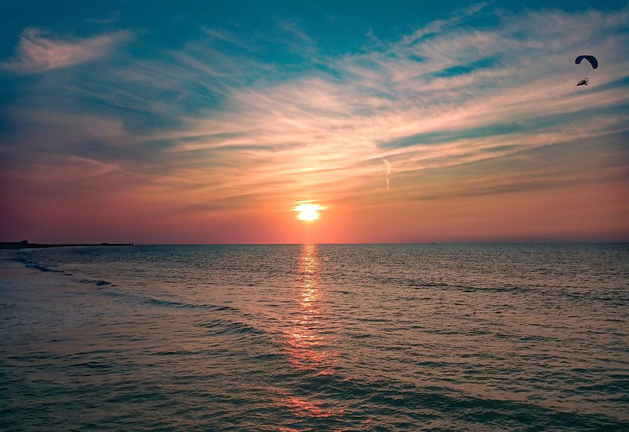
从海边起飞，在空中俯瞰整条海岸线，是这次最「值回票价」的空中视角。
基地在平海镇东和村高洋尾村，另有巽寮湾基地（金海湾大道，华美达酒店对面）。飞行受风力和天气限制，建议 Day 3 或 Day 4 上午先打电话确认当天能否飞，别把它排进唯一的时间窗口。
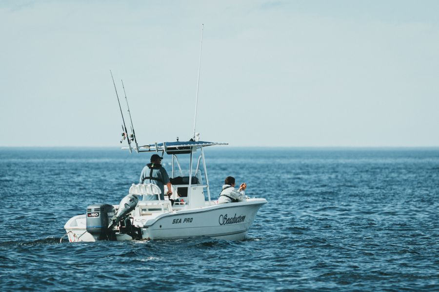
包一艘渔船到近海撒网，捕到的鱼全部归自己，可以带回餐厅加工。
按艘卖，一个人包不划算。如果沙滩上凑不到人，直接买单人的游船捕鱼票更省事。
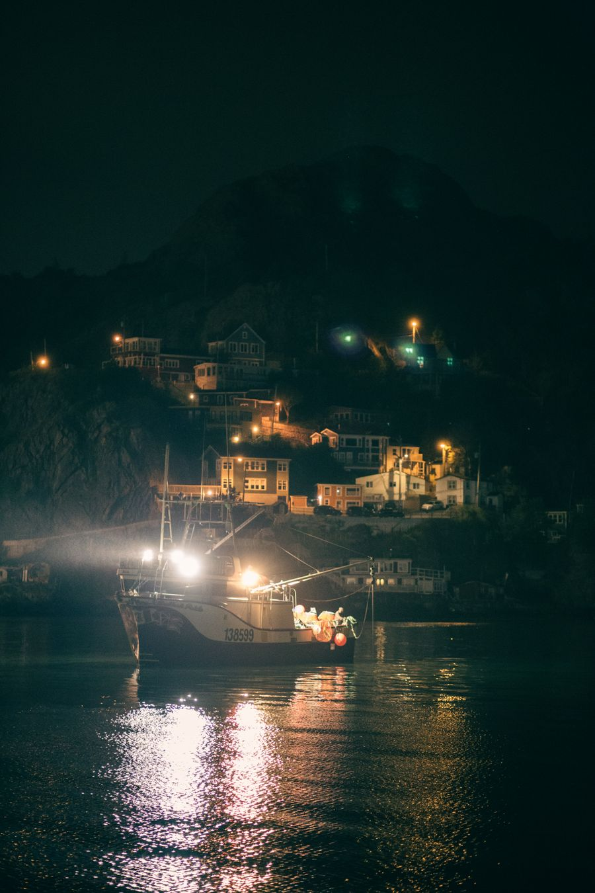
夜晚出海钓鱿鱼（墨鱼），两小时一趟，是白天玩够了之后的加时项。
1–6 人的团队票，同样需要拼船。建议当天下午去码头问，现场凑人比线上靠谱。
退潮后在滩涂挖蛤蜊、抓小螃蟹，零成本，但要踩准时间。
狮子岛沙滩、赤砂滨海公园（巽寮湾）都是本地人的赶海点。只在指定滩涂活动，不要往深水区走。
出发前查一下当天潮汐表，涨潮去什么都挖不到。
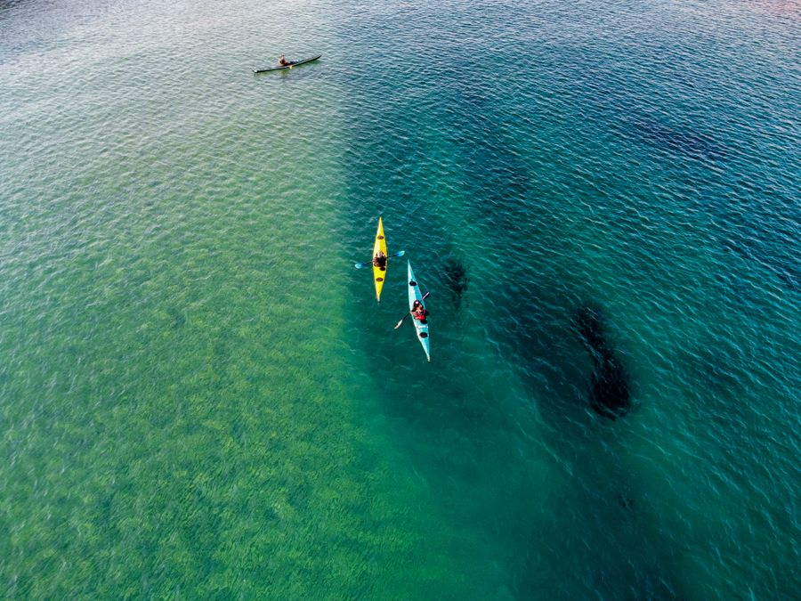
最不依赖天气和技术的水上项目，风浪小的时候随时能下水。
单独玩的机会不多，通常是「浮潜 + 皮划艇 + 赶海 + 快艇往返」套票里的一项，买套票比单买划算。
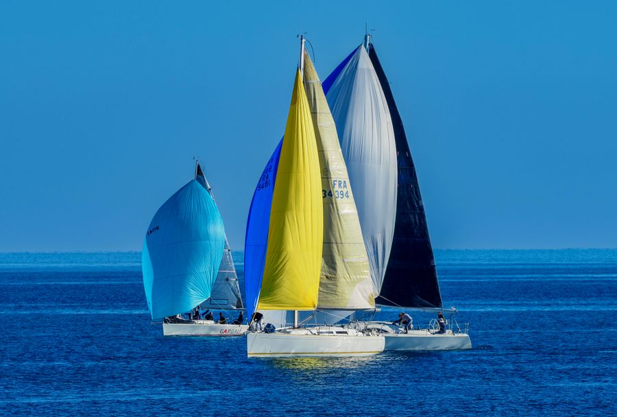
巽寮湾的招牌项目，有单人票卖，是双月湾这边比较少见的玩法。
如果某天愿意跑一趟巽寮湾（车程约 40 分钟），帆船是那边最值得玩的一项，而且有单人票。
佩戴氧气瓶下潜，有教练带，含装备、快艇往返和拍照。
说实话：科隆（Coron）是世界级的沉船潜点，惠东近岸的能见度和水下内容与它完全不是一个量级。抱着「体验一下本地水」的心态去就好，别期待看到什么。
如果时间紧，这项可以第一个砍掉。
住宿分两段：第一晚在市区江北的希尔顿套房，后两晚连住双月湾同一家海景酒店，中途不换窝。餐饮以港口镇和双月湾的海鲜为主，都是能查到评分和地址的具体门店。
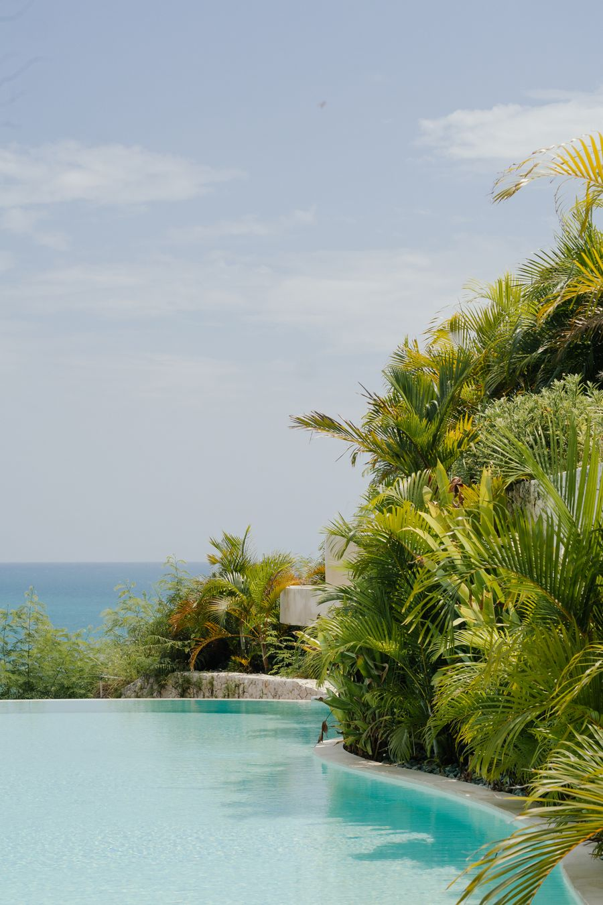
2025 年 9 月新开的国际五星，江北 CBD 核心，42 层有惠州首个高空无边泳池。
套房房型包括豪华套房、尊享套房、豪华行政套房与总统套房；行政房位于 39–41 层，可享行政楼层服务。所有客房配全景落地窗、智能马桶、电动窗帘与瑰珀翠（Crabtree & Evelyn）洗浴备品。
时间 入住 14:00、退房 12:00；厨艺全日制餐厅早餐 06:30–10:30，自助晚餐周三至周日 17:30–21:00；Heron 大堂吧 11:00–23:00。
第二天上午别浪费：早餐后去 42 层无边泳池，这是酒店最值得花时间的地方，退房时间是 12:00，够用。
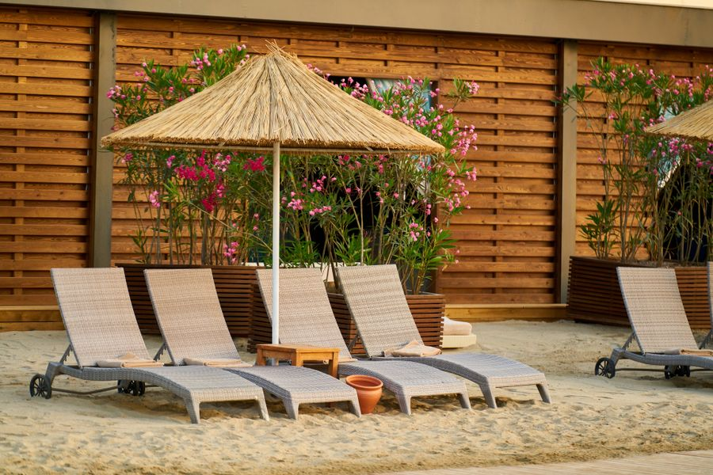
双月湾美景酒店榜 No.2，洞穴风格 + 全海景室内泡池，是四家里评分最高的。
房间是全海景室内泡池 + 洞穴风设计，泡在池子里看海的体验在双月湾很少见。适合把「住」本身当成行程的一部分。
我的首选：你是一个人来、也不打算往外跑，酒店本身的舒适度就变得很关键，这家最对得上。
惠州高档酒店榜 No.1，270° 海景房能同时看海上日出和日落。
评分 4.7 但价格只有其他几家的一半出头，是这份清单里最划算的一家。想在阳台上同时守日出和日落，选它。
代价是位置略偏（平海镇一侧），去沙滩和项目售票点要多开几分钟。
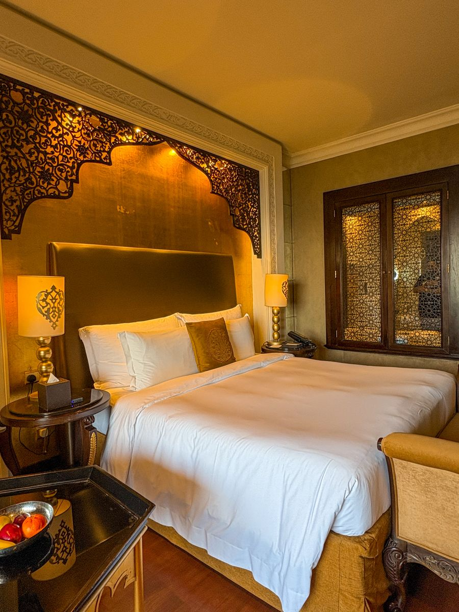
双月湾里少数带温泉的度假酒店，房型多为一房一厅、两房一厅的套房格局。
机场快线「喜行城际」的惠州机场→双月湾线路就停在酒店门口，如果从机场直接过来会方便很多。
玩了一天海上项目回来泡温泉，是这一家的独特卖点。
惠州美景酒店榜 No.3，在日出东山海海岸度假区内，礁石酒吧就在楼下。
9010 条点评是这几家里样本量最大的，说明经营稳定、不容易踩雷。住这里的话，¥78 的礁石酒吧门票等于下楼就到。
同度假区还有一家「日出东山海盐晶酒店」（4.6 / 6187 条，¥799 起），定位相近，可一并比价。
檀悦豪生度假酒店（携程 4.3 / 9164 条，¥598 起）：评论数是这儿最高的，但评分只有 4.3，主打亲子水上乐园和一站式带娃——独自度假的人付这个价享受不到对应的东西。
泰丽云顶度假酒店（携程 4.4 / 1445 条）：同样评分偏低，卖点是无边泳池和旅拍，硬件不错但服务波动大。
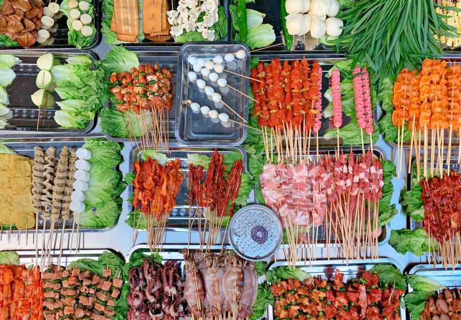
开在本地二十年的老牌海鲜馆，连年入围必吃榜，离海龟湾和虹海湾都很近。
营业 午市 11:00–15:30、晚市 17:00–21:00。地址 213 县道港口派出所以南 100 米东侧。
招牌与价格 粉丝蒸扇贝 ¥58、豉汁炒花甲 ¥38、蠔仔煎蛋 ¥38、酱爆鱿鱼筒 ¥78、椒盐濑尿虾 ¥78、海胆炒饭 ¥80、姜葱炒花蟹 ¥128、清蒸海鱼 ¥128。
做法偏粤式清蒸、豉汁、姜葱，少油清淡。食材新鲜度是这家被提得最多的亮点。
说明：4.4 分低于我通常给餐厅设的 4.5 门槛，但它的食材分是 4.6、有 8675 条评价、还进了 2026 必吃榜——这几点放在一起，我认为仍然值得去。你自己判断。
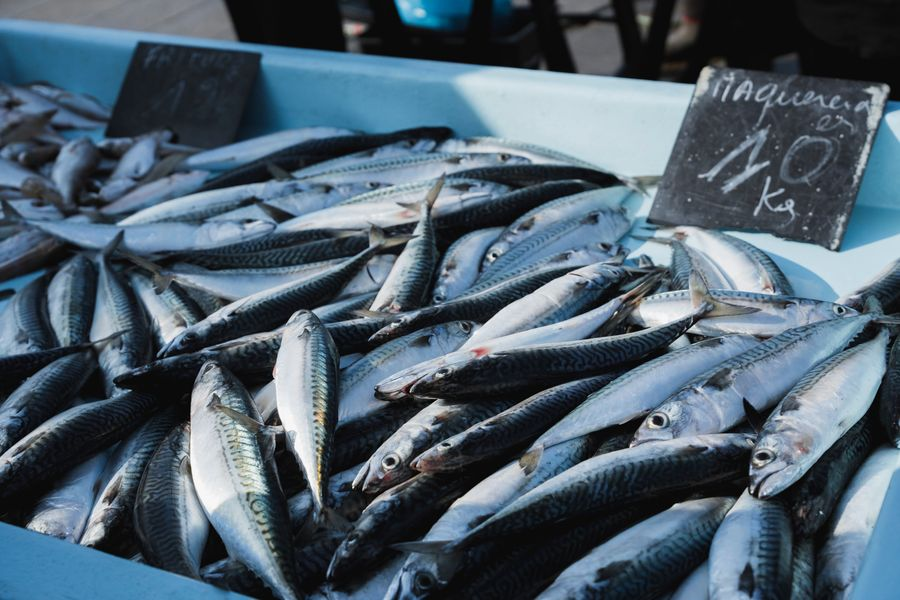
本地村子里的大排档，评价里提到不少路边店没有的海鲜做法。
被提到的菜：白灼大虾、梭子蟹、八爪鱼焖芋头。
提醒：只有 6 条评价，4.8 分不足以说明稳定水平，我把它列进来是因为位置在你住的区域附近、可以顺路试，但别抱太高期待。
点评攻略里评价不错的一家，菜品几乎没有踩雷。
有反馈说团购餐的海鲜不如单点新鲜——建议单点，价格也并不贵。
大排档里装修相对讲究的一家，上菜香气明显。
在巽寮湾，如果某天跑过去玩帆船或三角洲岛，可以顺路吃。
下高速不远就能看到，适合刚开完长途车先填肚子。
海胆炒饭的分量被反复提到，花甲个头大且没沙。
别买海鲜找店加工。加工按碟数收费，人少的时候极其不划算——一个人吃，直接进店点菜更省心也更便宜。真要买，港口市场得多比价多砍价，而且停车很难。
明确避雷的两家：海世界餐厅（檀悦精选店）——点很少东西就要两百，宰客；大榕树海鲜大排档土窑鸡店（巽寮第一土窑鸡）——味道一般、鱼腥、蟹个头小。
通用规则：选明码标价、门口挂着价目表的店；进店前先问清时价海鲜的单价。
你说不逛街，所以这里没有商场清单——只留一份能顺手买完、不太占箱子的海味单子。9 月底不是荔枝和龙眼的季节，这两样不用找了。
| 品类 | 具体 | 参考价 | 在哪买 |
|---|---|---|---|
| 海鲜干货 | 鱿鱼丝、墨鱼丝、虾干、鱼干 | ¥40–120/斤 | 港口市场、平海市场 |
| 藻类 | 紫菜（惠东沿海产） | ¥30–80/斤 | 港口市场 |
| 调味 | 虾酱、鱼露 | ¥15–40 | 市场干货摊 |
| 本地小吃 | 猪油糖、花生糖、芝麻糖 | ¥10–25 | 镇上小卖部 |
| 即食 | 鱼丸、炸鱼饼（需冷藏） | ¥25–50 | 市场现做摊位 |
市场买干货要多比价、多砍价，游客区的水分不小。景区门口和酒店大堂的礼盒装通常比市场贵一倍，不急的话回镇上买。
按重要性排序。第一条涉及你落地后能不能到家，请务必先看。
CA1958 22:25 起飞，落地首都 T3 是次日 01:30。而京津城际北京南末班约 23:17、首都机场往天津的大巴末班 23:00——两个都赶不上。
可行方案只有两条：网约车直达天津约 ¥320–390（1 小时 40 分），或者在 T3 附近住一晚、次日坐首班城际（C2551 06:00 北京南 → 06:30 天津）。
另外，CA1958 的取消率约 23%，是这条航线上最不稳的一班。出发前一天务必确认航班状态；如果它被取消，改签当天中午的 KN5362（12:50 起飞）会牺牲掉整个 Day 4，要有心理准备。
惠州没有地铁，从机场到双月湾只能靠快线、网约车或酒店接送。
| 方式 | 时间 | 费用 | 说明 |
|---|---|---|---|
| 机场快线 | 约 1.5h | ¥50/人 | 微信搜「喜行城际」小程序，选「惠州机场→双月湾」；每日 5 班：09:30 / 10:30 / 11:30 / 14:30 / 16:00 |
| 网约车 | 约 1–1.5h | ¥150–250 | 最灵活，夜间也容易叫到 |
| 酒店接送 | — | ¥200–300/趟 | 需提前 1 天联系酒店前台预约 |
| 公共交通 | 约 3h | ¥35 左右 | 机场快线到机场路口 → D1 路到惠东汽车总站 → 惠东至港口大巴（06:00–18:00，每 10 分钟一班） |
在双月湾内部，出行靠网约车、拼车或摩的；万科门口常有租车师傅，也可以请酒店帮忙叫车。
9 月底的惠东白天仍在 30°C 上下，体感偏热、紫外线强，下水完全没问题。但这段仍是台风季尾声，出发前一周要盯着预报。
如果台风临近：出海项目会第一个停，其次滑翔伞。把出海排在 Day 3、留 Day 4 上午做缓冲，就是这个原因——不要把所有水上项目挤在同一天。
必备：高倍防晒、驱蚊液、防滑沙滩鞋、晕船药（出海前半小时吃）。
情人堤 涨潮时海水漫上堤坝、路面湿滑，不要走到堤坝尽头，也不要在涨潮时逗留。
观景台 山顶风很大，春秋季温差明显，带件薄外套；别靠护栏边缘。
下海 只在有救生员的区域游泳，礁石区穿防滑鞋；狮子岛沙滩没有救生员，只适合赶海不适合游泳。
移动支付覆盖很全，带少量现金备用即可（市场摊位、摩的有时只收现金）。
预订提醒 9 月底虽非黄金周，但周末房源仍紧张，海景房建议提前订；水上项目线上提前购票比现场便宜，路边临时拉客的摊位容易溢价。礁石酒吧需微信小程序预约。
如果时间或天气不够，按这个顺序砍：小星山深潜 → 滑翔伞 → 夜钓鱿鱼 → 拖伞/香蕉船。反过来，出海浮潜赶海和一次日落是最不该省的两项。
这些是没有排进四天主线的选项，大多在双月湾 30–40 公里范围内。勾选你想加的，点底部按钮会生成一段可以直接发给 AI 的指令，让它帮你重排行程。
项目最集中的湾区：帆船出海 ¥92 起（有单人票，是这边最值得玩的一项）、三角洲岛浮潜、小镰仓日系斑马线、玫瑰礼堂日落。代价是要专门开 40 公里过去，且沙滩和水色比双月湾略逊。
海水比巽寮湾主沙滩清、人少，晴天有明显玻璃海效果，是这一带水质最好的点。缺点是必须坐快艇登岛（往返人均 100–150）、岛上只有一家小卖部和简易厕所、餐饮又少又贵，建议轻装 + 自带干粮。
海边天然巨石群，巽寮湾看海上日落的经典位置。免费、耗时短，适合和巽寮湾的其他点打包成半天。
始建于明朝的军事要塞，是离双月湾最近的人文点。但你说过不逛街、也不看人文，加上携程评分只有 3.8，所以没有排进主线。顺路瞄一眼可以，专程去不值。
两个免费拍照点：小镰仓是日系临海斑马线，玫瑰礼堂是纯白临海三角教堂配沙滩秋千。都免费、耗时短，纯拍照导向——不拍照可以直接略过。
开阔滩涂，本地人气的赶海点，退潮可挖蛤蜊、抓小螃蟹，免费开放。如果双月湾这边的赶海点当天不合适，这里是备选。
中国大陆唯一的海龟产卵地，离观景台很近，可以串成半个下午。已列在景点模块但没排进时间轴——你的重点是玩海，不是看保护区。下雨或风浪大时的好备选。
包一艘渔船到近海撒网，捕到的鱼全部归自己，可以带回餐厅加工。按艘卖，一个人包不划算，需要在沙滩上凑人；凑不齐就买单人游船票。
俯瞰整个双月湾，体验最强。但价格是滑翔伞的六倍，除非你特别想跳一次，否则性价比远低于滑翔伞，所以没排进主线。
勾选上面想加的景点，点下面的按钮，会生成一段结构化的指令，复制后发给任意 AI 即可让它在不破坏现有节奏的前提下重新编排。